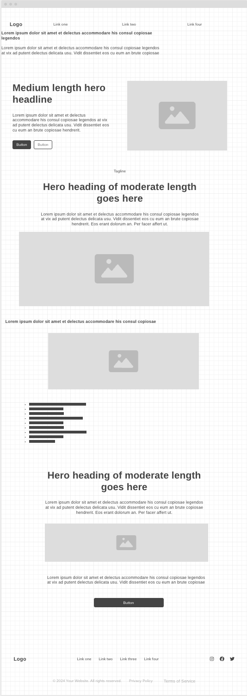
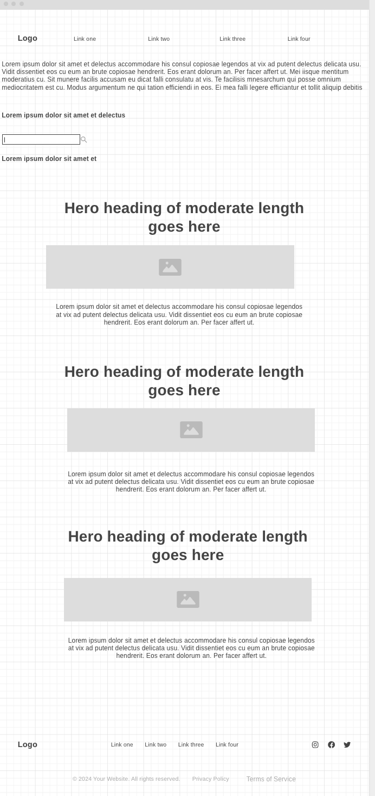

Personal Site Plan: Daily Mindfulness with Stoic Teachings

To help users practice daily mindfulness through simple Stoic teachings that promote resilience, inner calm, and intentional living.
College students and young adults seeking tools for stress management, emotional control, and mental clarity.
Primary Color: #2A2F33 (Charcoal Gray)
Accent Color: #A99260 (Gold-Tan)
Background: #F5F5F5 (Light Gray)
Font Headings: 'Merriweather', serif
Font Body: 'Open Sans', sans-serif
Welcome message, brief intro to Stoicism, and links to mindfulness tools and daily insights.
Step-by-step daily exercises inspired by Stoic philosophy, such as journaling prompts and reflection time.
Library of Stoic quotes, explanations, and ways to apply them in real life situations.
Home Page:
Child Page (Mindfulness Practices):
